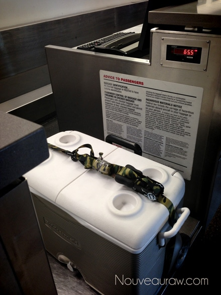

Almond Pulp
Almond Pulp
 Almond pulp is the by-product from making nut milk. It is a wonderful ingredient for making raw crackers, cookies, breads, tart crusts, and so on. Never throw this stuff away! If you make small amounts of the almond milk, place the pulp in a freezer-safe ziplock bag and pop it in the freezer until you acquire enough to make a recipe.
Almond pulp is the by-product from making nut milk. It is a wonderful ingredient for making raw crackers, cookies, breads, tart crusts, and so on. Never throw this stuff away! If you make small amounts of the almond milk, place the pulp in a freezer-safe ziplock bag and pop it in the freezer until you acquire enough to make a recipe.
To get almond pulp, you must first make almond milk. Here is a recipe on how to make Homogenized Almond milk or another post I did on Nut Milk. If you have a trouble with hand strength or make large amounts of nut milk, here is a great alternative that I came up with.
There are a few things to keep in mind about using almond pulp.
- 1 cup of almonds equals 1/2 cup of packed moist almond pulp. Roughly.
- Every batch of pulp will differ in moisture. The amount of moisture left in the pulp depends on how much you are able squeeze the milk from the nut bag. Therefore, you may need to adjust the liquids being used in pulp recipes. If it is really dry feeling, more moisture may need to be added. Or if the pulp is really wet, less moisture would probably be necessary.
- Remember that whatever ingredients you put in the almond milk will give the pulp a different flavor. So for example, if you add a sweetener to your milk before squeezing, the pulp will have a sweet taste to it… unless you add any further ingredients after you strain the nut pulp out.
- Almond pulp can be frozen. To thaw, just place on the kitchen counter or in the fridge till softened. You can also place the bag in a bowl of water to speed up the process, just make sure you have a sealed bag.
- Almond pulp can be dehydrated. Spread it out on a teflex sheet that comes with the dehydrator and dry at 115 degrees (F) for 4-8 hours or until completely dry. It can then be ground into a flour by using a food processor, a spice or coffee grinder.
- To make a white almond pulp, remove the skins after soaking and before blending into milk. For simple instructions, read here.
- There is no accurate way of knowing the nutritional data on almond pulp.
- Almond pulp has gone bad if it smells sour.
- Looking for recipes that use almond pulp? On the left side of your screen, up top… type in the search box “almond pulp”… and be ready for tons of recipes!
Last Spring, I was making a lot of almond milk for my girlfriend’s family. She bought the almonds, I made the milk for them and I got to keep the pulp. I was in fluffy, almond pulp, heaven. When we closed down our house in Tucson, I had a freezer full of almond pulp. There was no way on God’s green earth that I was going to leave it behind. I bought a cooler and packed up 62 lbs of almond pulp! This is one serious raw girl. hehe

© AmieSue.com